건축설비산업기사 (2015-09-19 기출문제)
1과목: 건축일반
1. 울거미를 짜고 양면에 합판을 교착한 것으로 뒤틀림 변형이 적은 것이 특징인 목제문은?
- 양판문
- 합판문
- 플러쉬문
- 완자문
(정답률: 56%)

2. 호텔의 세부계획에 대한 설명 중 옳지 않은 것은?
- 객실의 평면형은 실폭과 실길이의 종횡비와 욕실, 반침의 위치에 따라 침대와 가구의 배치를 검토하여 결정해야 한다.
- 현관은 호텔의 외부 접객장소로서 로비, 라운지와 분리한다.
- 로비는 퍼블릭 스페이스의 중심이 되어 휴식, 면회, 담화, 독서 등 다목적으로 사용되는 공간이다.
- 지배인실은 관리자 개인의 공간으로 외래객과 직접 대면할 수 있는 곳을 피한다.
(정답률: 87%)
3. 한식주택과 양식주택을 비교한 설명으로 옳지 않은 것은?
- 한식주택은 은폐적인 조합평면이다.
- 한식주택의 각 실은 단일용도이며 양식주택의 각 실은 다용도 형식으로 되어있다.
- 한식주택은 방한상으로는 불리하나 통풍에는 유리한 창호구조이다.
- 양식주택은 가구의 종류와 형에 따라 실의 크기가 결정된다.
(정답률: 86%)
4. 종합병원의 건축군을 크게 3부분으로 구분할 때 이에 해당되지 않는 것은?(오류 신고가 접수된 문제입니다. 반드시 정답과 해설을 확인하시기 바랍니다.)
- 외래진료부
- 응급부
- 병동부
- 부속진료부
(정답률: 66%)
5. 철골구조의 보와 관련된 부재가 아닌 것은?
- 플랜지(flange)
- 스티프너(stiffener)
- 웨브 플레이트(web plate)
- 베이스 플레이트(base plate)
(정답률: 63%)
6. 건축물의 구조계획에서 구조체 자중의 감소에 따른 이 점이 아닌 것은?
- 기둥축력의 감소에 따른 기둥의 단면감소
- 휨재 설계 시 장스팬이 가능
- 경제적인 기초설계
- 풍하중에 대한 건물의 전도방지
(정답률: 75%)
7. 주택의 부지 선정 시 우선 고려하여야 할 점 중 가장 거리가 먼 것은?
- 일조와 대지의 방향
- 지형과 지반상태
- 봄, 가을의 풍향과 풍속
- 기존 도시설비의 상황
(정답률: 88%)
8. 철골구조에 대한 설명 중 옳지 않은 것은?
- 구조물의 해체가 쉽고, 재사용이 가능하다.
- 철근콘크리트구조에 비하여 경량이다.
- 대규모 건물에 적합하다.
- 고열 및 화재에 강하다.
(정답률: 77%)
9. 다음 그림과 같은 형강의 올바른 표기법은?
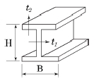
- I 형강, I-H×B×t1×t2
- I 형강, I-B×H×t2×t1
- H 형강, H-H×B×t1×t2
- H 형강, H-B×H×t2×t1
(정답률: 81%)
10. 아파트의 편복도형과 계단실형을 비교한 설명 중 옳지 않은 것은?
- 편복도형이 계단실형보다 공사비 대비 경제적이다.
- 편복도형이 계단실형보다 프라이버시에 불리하다.
- 편복도형이 계단실형보다 엘리베이터 1대당 이용률이 불리하다.
- 편복도형이 계단실형보다 단위 평면 구성에 있어 제한적이다.
(정답률: 72%)
11. 철골보에서 플랜지의 휨에 대한 보강재로 사용되는 것은?
- 윙 플레이트
- 커버 플레이트
- 스티프너
- 클립앵글
(정답률: 62%)
12. 학교 강당 및 실내체육관의 계획에 대한 설명 중 옳지 않은 것은?
- 강당 겸 체육관은 지역 커뮤니티의 시설로 이용될 수 있도록 고려한다.
- 강당과 체육관을 겸용할 경우 체육관의 목적으로 치중하는 것이 좋다.
- 강당은 전교생을 수용할 수 있는 크기 이상으로 계획 하여야 한다.
- 체육관은 농구 코트를 둘 수 있는 크기가 필요하다.
(정답률: 69%)
13. 건축의 형태 구성 원리에 대한 설명으로 옳지 않은 것은?
- 통일성은 선, 면, 공간 사이에서 상호간의 양적인 관계를 말한다.
- 건축에서 큰 형태를 강조하기 위해 더욱 작은 형태를 근접시키는 것은 대비의 기법이다.
- 구성체의 부분과 전체 사이에 시각적 쾌적한 형태감을 주는 것은 균형 때문이다.
- 질감에 의해서도 통일, 변화, 조화, 대비감을 줄 수 있다.
(정답률: 67%)
14. 호텔의 린넨실의 용도에 대해 옳게 설명한 것은?
- 현관 홀에 접하여 응접용, 대화용 등을 위해 칸막이를 설치하지 않은 장소이다.
- 화물 엘리베이터가 설치되는 장소이다.
- 숙박객의 세탁물을 수납하는 장소이다.
- 숙박객의 물건도난방지를 위해 설치해 놓은 장소이다.
(정답률: 91%)
15. 상점건축의 판매방식에 대한 설명 중 옳은 것은?
- 대면판매는 고객의 자율적인 판단이 우선된다.
- 측면판매는 진열면적이 감소되어 유리하다.
- 대면판매는 상품의 설명이나 포장이 어렵다.
- 측면판매는 충동구매와 선택구매가 용이하다.
(정답률: 78%)
16. 다음 중 리조트 호텔(resort hotel)은?
- 클럽 하우스(club house)
- 부두 호텔(habor hotel)
- 공항 호텔(airport hotel)
- 레지덴셜 호텔(residential hotel)
(정답률: 75%)
17. 철골공사 용접 시 용접 전 예열의 목적으로 옳지 않은 것은?
- 변형과 잔류응력을 증대시킨다.
- 용접부의 냉각 속도를 느리게 한다.
- 열영향부의 경도를 낮추고 인성을 증가시킨다.
- 수소의 방출을 용이하게 하여 저온균열을 방지한다.
(정답률: 57%)
18. 사무소건축의 코어공간에 관한 설명 중 옳지 않은 것은?
- 계단과 엘리베이터 및 화장실은 가능한 한 접근시킬 것
- 잡용실과 급탕실은 가급적 거리를 둘 것
- 코어 내의 각 공간은 각 층마다 공통의 위치에 있을 것
- 엘리베이터는 가급적 중앙에 집중시킬 것
(정답률: 85%)
19. 도서관의 서고계획에 관한 설명 중 옳지 않은 것은?
- 캐럴은 서고 안에 둔다.
- 서고 안에 큐비클을 둘 수 있다.
- 서고는 장래의 증축을 고려한다.
- 서고와 열람실은 층 높이를 같게 한다.
(정답률: 76%)
20. 영식쌓기법에서 모서리 부분에 이오토막이나 반절을 사용하는 가장 주된 이유는?
- 모서리 부분의 통줄눈을 피하기 위하여
- 모서리 부분의 시공 편리성을 위하여
- 모서리 부분의 미적효과를 위해서
- 모서리 부분의 벽돌절감을 위해서
(정답률: 88%)
2과목: 위생설비
21. 길이가 50m인 동관으로 된 급탕 수평주관에 급탕이 공급되어 관의 온도가 10℃에서 90℃까지 상승된 경우 동관의 팽창량은? (단, 동관의 선팽창계수α=1.66×10-5이다.)
- 0.66cm
- 6.64cm
- 0.75cm
- 7.47cm
(정답률: 60%)
22. 다음의 자동화재탐지설비의 감지기 중 연기 감지기에 속하는 것은?
- 차동식
- 보상식
- 정온식
- 이온화식
(정답률: 63%)
23. 통기관의 종류 중 2개 이상인 기구트랩의 봉수를 모두 보호하기 위해 설치하는 것으로 최상류의 기구배수관이 배수수평지관에 접속하는 위치의 직하에서 입상하여 통기수직관 또는 신정통기관에 접속하는 것은?
- 습통기관
- 루프통기관
- 각개통기관
- 결합통기관
(정답률: 52%)
24. 관균등표에 의한 관경 결정과 관련하여 다음과 같은 내용을 나타내는 식은?
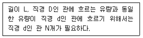
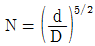
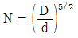
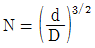
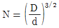
(정답률: 66%)
25. 조기반응형 스프링클러헤드를 설치하여야 하는 장소에 속하지 않는 것은?
- 병원의 입원실
- 단독주택의 거실
- 숙박시설의 침실
- 노유자시설의 거실
(정답률: 65%)
26. 사이폰작용에 물의 회전운동을 주어 와류작용을 가한 것으로서, 세척시 소음이 적으며 주로 일체형 대변기로서 고급호텔 등에 많이 설치되는 것은?
- 세락식 대변기
- 블로우 아웃식 대변기
- 사이폰 제트식 대변기
- 사이폰 볼텍스식 대변기
(정답률: 73%)
27. 로우탱크 방식의 대변기에 관한 설명으로 옳지 않은 것은?
- 설치면적을 많이 차지한다.
- 고장 시 수리보수가 비교적 용이하다.
- 하이탱크 방식에 비하여 소음이 크다.
- 수도직결의 경우 저압의 지역에서 사용이 가능하다.
(정답률: 75%)
28. 고가수조로부터 위생기구까지의 정수두가 h[m] 일 때, 정수두와 유량 Q[L/min]와의 관계를 가장 올바르게 표현한 것은?
- Q ∝ (h)1/2
- Q ∝ h
- Q ∝ (h)2
- Q ∝ (h)3
(정답률: 57%)
29. 급수 배관에 에어쳄버를 설치하는 주된 이유는?
- 수격작용을 방지하기 위하여
- 배관의 부식을 방지하기 위하여
- 배관의 동파를 방지하기 위하여
- 크로스 커넥션을 방지하기 위하여
(정답률: 80%)
30. 수질과 관련된 용어 중 부유물질로서 오수 중에 현탁되어 있는 물질을 의미하는 것은?
- SS
- OD
- ppm
- COD
(정답률: 77%)
31. 중앙식 급탕법 중 직접가열식에 관한 설명으로 옳지 않은 것은?
- 열효율이 높다.
- 보일러 안에 스케일이 부착될 우려가 있다.
- 건물높이에 관계없이 저압보일러가 사용된다.
- 저탕조와 보일러를 직결하여 순환 가열하는 방식이다.
(정답률: 76%)
32. 슬리브형 신축이음쇠에 관한 설명으로 옳지 않은 것은?
- 장시간 사용 시 패킹의 마모로 누수의 원인이 된다.
- 신축량이 크고 신축으로 인한 응력이 생기지 않는다.
- 루프형 신축 이음쇠에 비해 설치 공간을 많이 차지한다.
- 배관에 곡선 부분이 있으면 신축 이음쇠에 비틀림이 생겨 파손의 원인이 된다.
(정답률: 59%)
33. 급탕설비의 부속장치 중 온도조절장치는?
- 써모스텟(thermostat)
- 다이어프램(diaphragm)
- 스팀 트랩(steam trap)
- 스팀 사일렌스(steam silencer)
(정답률: 81%)
34. 펌프의 양수량이 3000L/min이고, 펌프의 효율은 75%, 전양정은 20m일 때 펌프 축동력은?
- 약 10kW
- 약 11kW
- 약 12kW
- 약 13kW
(정답률: 53%)
35. 기구 소요압력 150kPa, 수도 본관에서 최고층 급수 기구까지 높이 5m, 전마찰손실수두압 50kPa 일 때 수도 본관의 최저 필요 압력은?
- 약 150kPa
- 약 200kPa
- 약 250kPa
- 약 500kPa
(정답률: 74%)
36. 배수관에 관한 설명으로 옳지 않은 것은?
- 배수관은 배수의 유하방향으로 관경을 축소해서는 안된다.
- 배수관의 구배를 크게 하면 할수록 오물을 반송하기 위한 능력은 커진다.
- 기구배수관의 관경은 이것에 접속하는 위생기구의 트랩구경 이상으로 한다.
- 배수수직관의 관경은 이것에 접속하는 배수수평지관의 최대 관경 이상으로 한다.
(정답률: 62%)
37. Pole의 공식은 어떤 관의 관경을 산정하기 위한 공식인가?
- 급수관
- 가스관
- 냉온수관
- 압축공기 배관
(정답률: 80%)
38. 다음과 가장 관계가 깊은 것은?
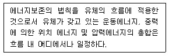
- 줄의 법칙
- 파스칼의 원리
- 베르누이의 정리
- 뉴턴의 점성법칙
(정답률: 72%)
39. 다음 설명에 알맞은 배수 트랩의 종류는?
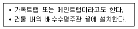
- U트랩
- S트랩
- P트랩
- 드럼 트랩
(정답률: 72%)
40. 간접배수를 가장 올바르게 표현한 것은?
- 건물외벽 1m 이내의 배수시설
- 오수의 역류를 방지하기 위한 배수장치
- 옥내배수를 공공하수에 연결시켜주는 장치
- 건물외벽 1m부터 공공하수에 이르는 배수시설
(정답률: 52%)
3과목: 공기조화설비
41. 직경 0.5m, 길이 10m인 덕트에 풍속 8m/s로 송풍될 때 직관부 마찰손실은? (단, 덕트 재료의 마찰저항계 수는 0.02, 공기의 밀도는 1.2kg/m3이다.)
- 15.36Pa
- 20.34Pa
- 27.22Pa
- 35.74Pa
(정답률: 43%)
42. 복사난방에 관한 설명으로 옳지 않은 것은?
- 실내 상하의 온도차가 작다.
- 증기난방에 비하여 쾌적감이 높다.
- 열용량이 작아 간헐난방에 적합하다.
- 외기 침입이 있는 곳에서도 난방감을 얻을 수 있다.
(정답률: 69%)
43. 다음 중 왕복펌프의 종류에 속하는 것은?
- 베인펌프
- 터빈펌프
- 기어펌프
- 플런저펌프
(정답률: 47%)
44. 대향류형 냉각탑이 직교류형 냉각탑에 비해 유리한 점으로 옳은 것은?
- 급수압력
- 열교환효율
- 송풍기동력
- 살수장치의 보수점검
(정답률: 75%)
45. 겨울철 ㉠ 상태의 외기가 공기조화기에서 환기 (return air)와 혼합되면서 상태량이 변하는 과정을 습공기 선도에 올바르게 나타낸 것은?
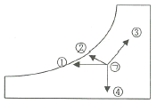
- ①
- ②
- ③
- ④
(정답률: 69%)
46. 어떤 수평덕트 내를 흐르는 공기의 전압 및 정압을 측정한 결과 각각 33.8mmAq, 25mmAq 이었다. 이때 덕트 내 공기의 유속은 얼마인가? (단, 공기의 밀도는 1.2kg/m3이다.)
- 8m/s
- 10m/s
- 12m/s
- 14m/s
(정답률: 52%)
47. 관의 일부가 파손되어 보일러수가 유출되면서 보일러가 빈 상태로 가동되는 것을 방지하기 위해 보일러 내의 안전수위를 유지하도록 배관하는 접속법은?
- 트랩 접속법
- 리프트 접속법
- 하트포드 접속법
- 리버스리턴 접속법
(정답률: 63%)
48. 냉동기에서 냉매의 압력을 응축압력에서 증발압력까지 낮추는 데 사용하는 밸브는?
- 볼밸브
- 2방밸브
- 슬루스밸브
- 온도식 팽창밸브
(정답률: 58%)
49. 난방 시 외기와의 온도차가 5℃일 때 외벽면적 30m2를 통하여 이동되는 관류열량은? (단, 외벽의 열관류율은 0.5W/m2 ㆍ K 이다.)
- 15W
- 30W
- 75W
- 150W
(정답률: 69%)
50. 다음 중 인체의 신진대사량을 나타내는 단위로 올바른 것은?
- clo
- met
- ppm
- vol%
(정답률: 66%)
51. 다음의 가습방식 중 물을 공기 중에 직접 분무하는 수분무식에 속하지 않는 것은?
- 원심식
- 분무식
- 초음파식
- 과열증기식
(정답률: 59%)
52. 다음은 정풍량 단일덕트 공조방식의 구성 개념도 이다. 그림에서 외기 및 배기덕트가 없을 경우 발생하는 현상은?
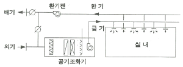
- 에너지소비가 과다해진다.
- 급기온도의 조절이 어렵게 된다.
- 공기필터의 성능이 급격히 저하된다.
- 실내의 쾌적한 공기질을 보장할 수 없다.
(정답률: 71%)
53. 온수난방설비에서 역환수(Reverse return) 방식이 아닌 직접환수방식을 적용하는 경우 각 계통의 필요유량 분배를 위하여 설치하는 것은?
- 차압밸브
- 정유량밸브
- 게이트밸브
- 글로브밸브
(정답률: 75%)
54. 유인유닛방식에 관한 설명으로 옳지 않은 것은?
- 유인유닛에는 동력(전기)배선이 필요 없다.
- 각 유닛에는 배관이 시공되지 않아 누수의 우려가 없다.
- 각 유닛마다 제어가 가능하므로 개별실 제어가 가능하다.
- 중앙공조기는 1차 공기만 처리하므로 규모를 작게 할수 있다.
(정답률: 54%)
55. 냉각탑 설치 시 고려할 사항으로 옳지 않은 것은?
- 설치장소는 통풍이 잘 될 것
- 냉각탑에서 배출된 공기가 다시 냉각탑 내로 흡입되지 않도록 할 것
- 측벽과 냉각탑의 이격거리는 냉각탑 높이의 1/2 이하로 할 것
- 연도가스를 흡입하지 않도록 굴뚝정상과의 거리는 가능한 떨어지게 설치할 것
(정답률: 67%)
56. 건축물의 난방 시 발생하는 굴뚝효과에 관한 설명으로 옳지 않은 것은?
- 난방 시 중성대 상부에서는 내부공기가 외부로 유출된다.
- 건물 내부온도가 상승하면 중성대 위치는 상부로 이동한다.
- 건축물 내부의 공기유동은 온도차에 의한 밀도차가 원인이다.
- 중성대 하부에 개구부를 많이 설치하면 중성대 위치가 하부로 이동한다.
(정답률: 57%)
57. 냉동기에 관한 설명으로 옳은 것은?
- 흡수식 냉동기는 전기가 주 에너지원이다.
- 흡수식 냉동기는 압축식 냉동기에 비해 소음 진동이 적다.
- 설비비의 면에서는 압축식 냉동기가 흡수식에 비해서 불리하다.
- 흡수식 냉동기의 냉동사이클은 압축 → 응축 → 증발 →팽창의 순이다.
(정답률: 71%)
58. 다음 중 화장실 등과 같이 냄새나 유해가스 등이 발생되는 장소에 가장 적합한 환기 방식은?
- 자연급기 + 자연배기
- 강제급기 + 자연배기
- 자연급기 + 강제배기
- 온도차에 의한 자연환기
(정답률: 82%)
59. 다음 중 증기트랩의 설치 위치로 가장 적당한 곳은?
- 펌프의 입구
- 펌프의 출구
- 방열기의 입구
- 방열기의 환수구
(정답률: 69%)
60. 공기조화방식 중 전공기방식에 관한 설명으로 옳지 않은 것은?
- 덕트 스페이스가 필요하다.
- 중간기에 외기냉방이 가능하다.
- 전수방식에 비해 반송동력이 작다.
- 청정도가 요구되는 병원 수술실 등에 적합하다.
(정답률: 48%)
4과목: 건축설비관계법규
61. 높이 31m를 넘는 각 층의 바닥면적이 각각 5000m2인 사무소 건축물에 설치하여야 하는 비상용 승강기의 최소 대수는?
- 1대
- 2대
- 3대
- 4대
(정답률: 42%)
62. 건축물의 냉방설비에 대한 설치 및 설계기준에 정의 된 심야시간은?
- 21 : 00부터 다음 날 09 : 00까지
- 22 : 00부터 다음 날 09 : 00까지
- 23 : 00부터 다음 날 09 : 00까지
- 24 : 00부터 다음 날 09 : 00까지
(정답률: 69%)
63. 다음 중 건축물의 바깥쪽으로의 출구로 쓰이는 문을 안여닫이로 하여서는 안되는 건축물의 용도는?
- 종교시설
- 업무시설
- 판매시설
- 문화 및 집회시설 중 전시장
(정답률: 53%)
64. 다음은 공동주택 거실의 환기에 관한 기준 내용이다. ( )안에 알맞은 것은?
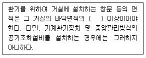
- 10분의 1
- 15분의 1
- 20분의 1
- 30분의 1
(정답률: 63%)
65. 건축법령상 의료시설에 속하지 않는 것은?
- 한의원
- 치과병원
- 요양병원
- 전염병원
(정답률: 78%)
66. 건축물의 에너지절약설계기준에 따른 야간단열 장치의 총열관류저항 기준은?
- 0.1m2 ㆍ K/W 이상
- 0.2m2 ㆍ K/W 이상
- 0.3m2 ㆍ K/W 이상
- 0.4m2 ㆍ K/W 이상
(정답률: 80%)
67. 특정소방대상물이 병원인 경우, 인명구조기구 중 방열복 및 공기호흡기를 설치하여야 하는 층수 기준은?
- 지하층을 포함하는 층수가 3층 이상
- 지하층을 포함하는 층수가 5층 이상
- 지하층을 포함하는 층수가 7층 이상
- 지하층을 포함하는 층수가 9층 이상
(정답률: 69%)
68. 다음은 특정소방대상물의 소방시설 설치의 면제기준 내용이다. ( ) 안에 알맞은 설비는?
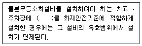
- 연결살수설비
- 스프링클러설비
- 옥내소화전설비
- 옥외소화전설비
(정답률: 82%)
69. 문화 및 집회시설 중 공연장의 개별관람석의 각 출구의 유효너비는 최소 얼마 이상이어야 하는가? (단, 개별관람석의 바닥면적이 300m2인 경우)
- 1.0m
- 1.5m
- 2.0m
- 2.5m
(정답률: 75%)
70. 방송 공동수신설비를 설치하여야 하는 대상 건축물에 속하지 않는 것은?
- 공동주택
- 바닥면적의 합계가 5,000m2으로서 판매시설의 용도로 쓰는 건축물
- 바닥면적의 합계가 5,000m2으로서 업무시설의 용도로 쓰는 건축물
- 바닥면적의 합계가 5,000m2으로서 숙박시설의 용도로 쓰는 건축물
(정답률: 42%)
71. 특별피난계단의 구조에 관한 기준 내용으로 옳지 않은 것은?
- 출입구의 유효너비는 0.8m 이상으로 할 것
- 계단실에는 예비전원에 의한 조명설비를 할 것
- 계단은 내화구조로 하되, 피난층 또는 지상까지 직접 연결되도록 할 것
- 건축물의 내부에서 노대 또는 부속실로 통하는 출입구에는 갑종방화문을 설치할 것
(정답률: 67%)
72. 다음의 소방시설의 내진설계기준과 관련된 내용 중 밑줄 친대통령령으로 정하는 소방시설에 속하지 않는 것은?
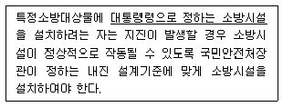
- 소화기구
- 소화수조
- 제연설비
- 옥내소화전설비
(정답률: 62%)
73. 피뢰설비를 설치하여야 하는 건축물의 높이 기준은?
- 10m 이상
- 20m 이상
- 30m 이상
- 40m 이상
(정답률: 79%)
74. 방염성능기준 이상의 실내장식물 등을 설치하여야 하는 특정소방대상물에 속하지 않는 것은? (단, 건축물의 옥내에 있는 시설로 층수가 11층 미만인 것)
- 종교시설
- 업무시설
- 문화 및 집회시설
- 운동시설 중 볼링장
(정답률: 71%)
75. 건축물의 에너지절약설계기준에 따른 단열재의 두께는 지역별로 다르다. 지역별 분류 중 중부지역에 속하지 않는 곳은?
- 경기도
- 서울특별시
- 대전광역시
- 충남 천안시
(정답률: 81%)
76. 다음의 소방시설 중 소화활동설비에 속하는 것은?
- 유도표지
- 비상방송설비
- 비상콘센트설비
- 자동확산소화기
(정답률: 74%)
77. 다음 중 6층 이상의 거실면적의 합계가 2,500m2일 때 설치하여야 하는 승용승강기의 최소 대수가 가장 많은 건축물의 용도는? (단, 15인승 승강기일 경우)
- 공동주택
- 위락시설
- 업무시설
- 의료시설
(정답률: 82%)
78. 특별시나 광역시에 건축물을 건축하는 경우, 특별시장 또는 광역시장의 허가를 받아야 하는 건축물의 층수 기준은?
- 6층 이상
- 15층 이상
- 21층 이상
- 41층 이상
(정답률: 75%)
79. 건축물의 관람석 또는 집회실로서 그 바닥면적이 200m2 이상인 것의 반자 높이를 최소 4m 이상으로 하여야 하는 건축물의 용도에 속하지 않는 것은? (단, 기계 환기장치를 설치하지 않는 경우)
- 종교시설
- 장례식장
- 문화 및 집회시설 중 전시장
- 문화 및 집회시설 중 공연장
(정답률: 70%)
80. 상수도소화용수설비를 설치하여야 하는 특정 소방대상물의 연면적 기준은?
- 1,000m2 이상
- 2,000m2 이상
- 3,000m2 이상
- 5,000 이상
(정답률: 50%)